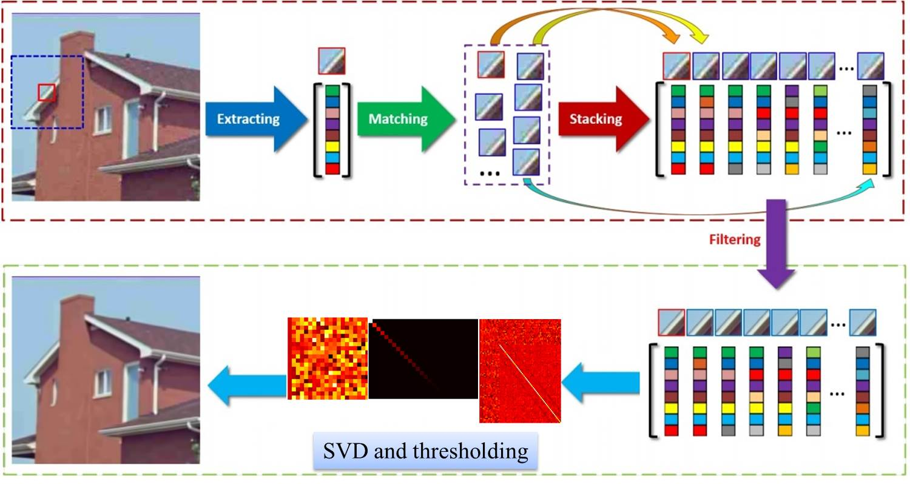
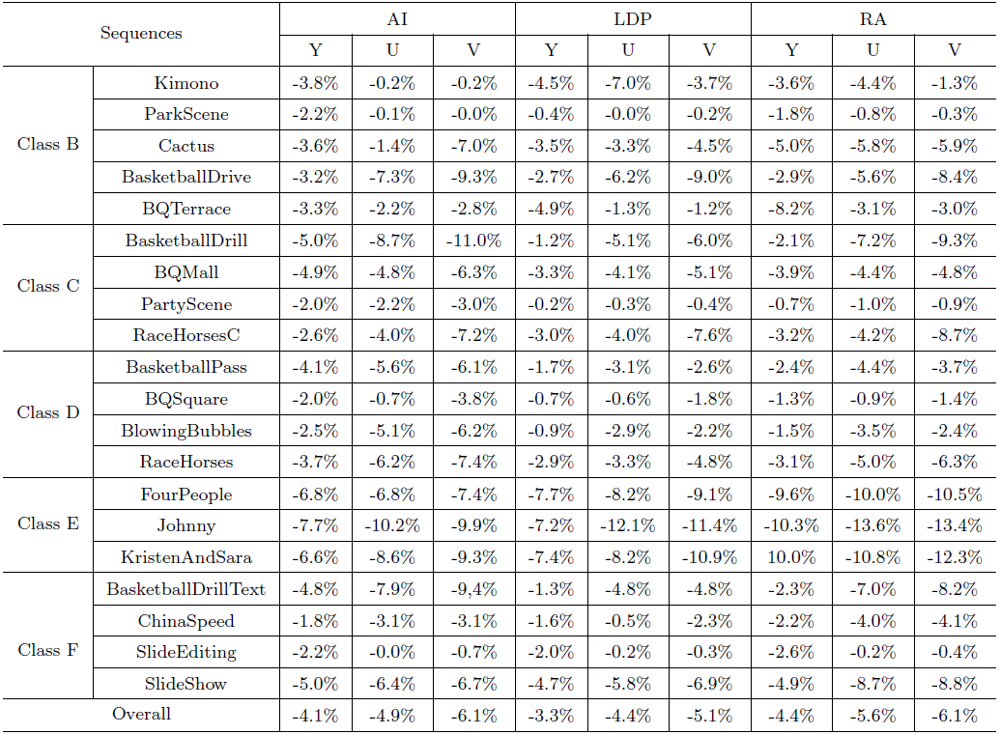

The non-local self-similarity (NSS) has been emerging as one of the most properties of natural image and videos, which depicts the repetitiveness of higher level patterns (e.g., textures and structures) globally positioned in images and videos, and has achieved great success in various image/video restoration applications. Experimental results demonstrate that the proposed NLSF can achieve up to significant coding gain compared with the original HEVC reference encoder implementation in all coding configurations.
Proposed NLSF Algorithm
The basic idea of proposed NLSF algorithm is to adaptively sparsify the natural image in the domain of group. After deblocking filter in HEVC, the whole reconstructed image is feeded into the NLSF algorithm by overlapply searching the similar blocks for group sparsity. The singular value decomposition (SVD) is then applied to the generated sparse groups, after which the whole image is averagely recontructed. As such, the block artifact and blurring artifact can be removed by the collaborative filtering process in SVD and better prediction performance can be obtained for subsequent video coding.

Fig. 1 Diagram of the proposed NLSF algorithm in HEVC.
Performance
Fig 2. provides the sequence by sequence-by-sequence. It is clear that SANF performs well on all test sequences under all configuration. Table 3 shows us the performance of our proposed SANF under all intra, low delay B and random access configurations when ALF turns off. Obviously, SANF could buy us giant coding gain in all circumstances.

Fig. 2 Left: Performance of proposed framework under bit-rate reduction (BDBR) metric, anchor: HM-12.0.
Publication
S. Ma, X. Zhang, J. Zhang, C.Jia, S. Wang and W. Gao. Nonlocal In-Loop Filter: The Way Toward Next-Generation Video Coding? IEEE MultiMedia 23 (2), 16-26.
J. Zhang, C. Jia, N. Zhang, S. Ma and W. Gao. Structure-driven Adaptive Non-local Filter for HEVC. IEEE DCC 2016.
J. Zhang, C. Jia, S. Ma and W. Gao. Non-Local Structure-Based Filter for Video Coding. IEEE ISM 2015.